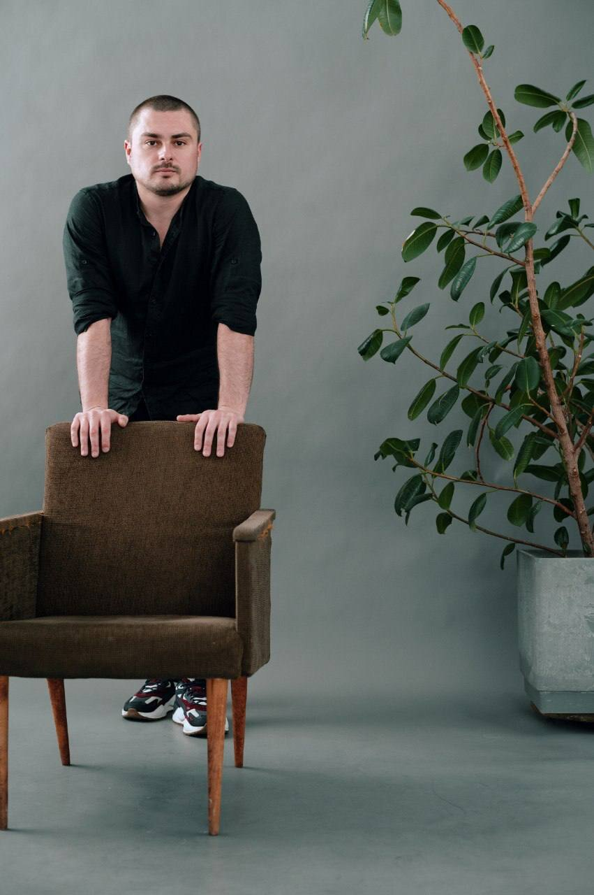

Human Design
Понять себя глубже
Чтения Дизайна Человека помогают увидеть вашу механику: стратегию, авторитет, сильные стороны, таланты, отношения и циклы жизни.
- Краткое чтение: 30 000 ₽
- Стандартное чтение: 50 000 ₽
- Полное чтение: 150 000 ₽

Human Design · биоэнергетика · ретриты
Я помогаю людям возвращаться к себе через Дизайн Человека, биоэнергетику и глубокую работу с состоянием.
Ко мне приходят, когда внутри много шума, усталости, вопросов к себе и хочется не просто получить совет, а почувствовать опору, ясность и живой контакт с собой.
С чем ко мне приходят
Усталость, стресс, перегруз или ментальный шум.
Поиск своих талантов, природы и направления.
Период перемен, где нужна внутренняя опора.
Желание почувствовать тело, эмоции и собственную энергию.

О подходе
В моей работе тело, эмоции, мышление, энергия и врождённая индивидуальность не разделяются, а рассматриваются вместе.
Я соединяю Human Design, биоэнергетику, практики Рейки, психосоматику, работу с эмоциями, телом и вниманием. Формат подбирается под ваш запрос: от личного чтения до ретрита или обучения методу.
Форматы работы
Human Design
Чтения Дизайна Человека помогают увидеть вашу механику: стратегию, авторитет, сильные стороны, таланты, отношения и циклы жизни.
Биоэнергетика
Бережная работа с телом, эмоциями и внутренним напряжением. Люди отмечают расслабление, ясность, больше ресурса и ощущение собранности.
Живые форматы
Ретриты, групповые практики и живые встречи создают пространство, где состояние поддерживается телом, природой, дыханием и индивидуальными ответами.

Ретрит «Новая глубина»
Мы с Яной создаём пространство, где можно выйти из привычного шума, почувствовать тело, восстановить ресурс и получить индивидуальные ответы через Human Design, биоэнергетику, дыхание и практики.
Обучение методу
Для тех, кто хочет применять метод для себя, близких, клиентов или добавить новый инструмент в помогающую практику. Внутри 18 часов структурированных видеоуроков и пошаговая методика.
Самостоятельный
Полный доступ к урокам, теория и практика в своём темпе.
С сопровождением
Личное ведение, обратная связь и